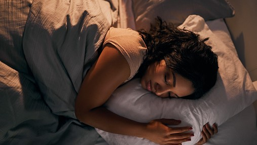

Do more of physical activities!
Physical activities such as biking, walking, sports or even dancing have all been shown to remove anexiety and depression.

Physical activities such as biking, walking, sports or even dancing have all been shown to remove anexiety and depression.
Excercising, not only improves mood and mental health, but has also been shown to improve self esteem as well as attention and memory. Excercising also improve the sleep quality.
Sleep also plays important role to improve mental health. Insomnia and sleep disturbances have shown to be common occurences in many at-risk populations. Higher quality of sleep may significantly improve symptoms of stress, depression and anexiety. Sleeping 7 hours a day is recommended to have healthy sleeping schedule.
Screen time is highly associated with mental health while screen time is unavoidable given the transition to an online work and learning environment. The internet is also filled with misinformation and divisive content reducing unneccesary screen time especially on social media can have a profound and positive effect on your mental health.